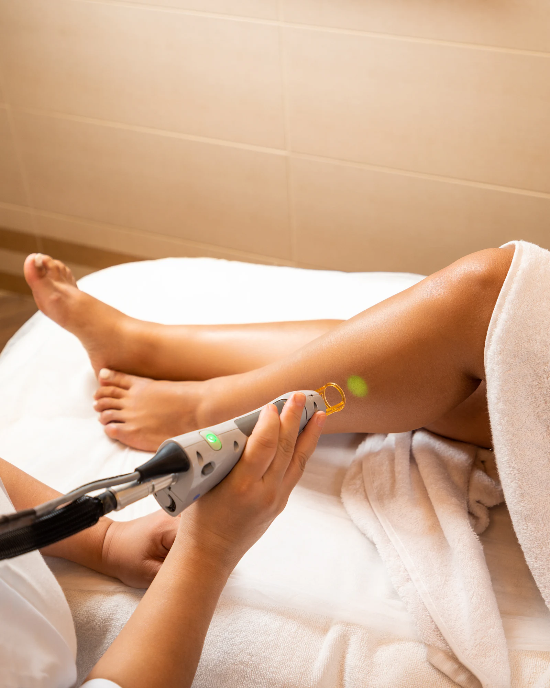
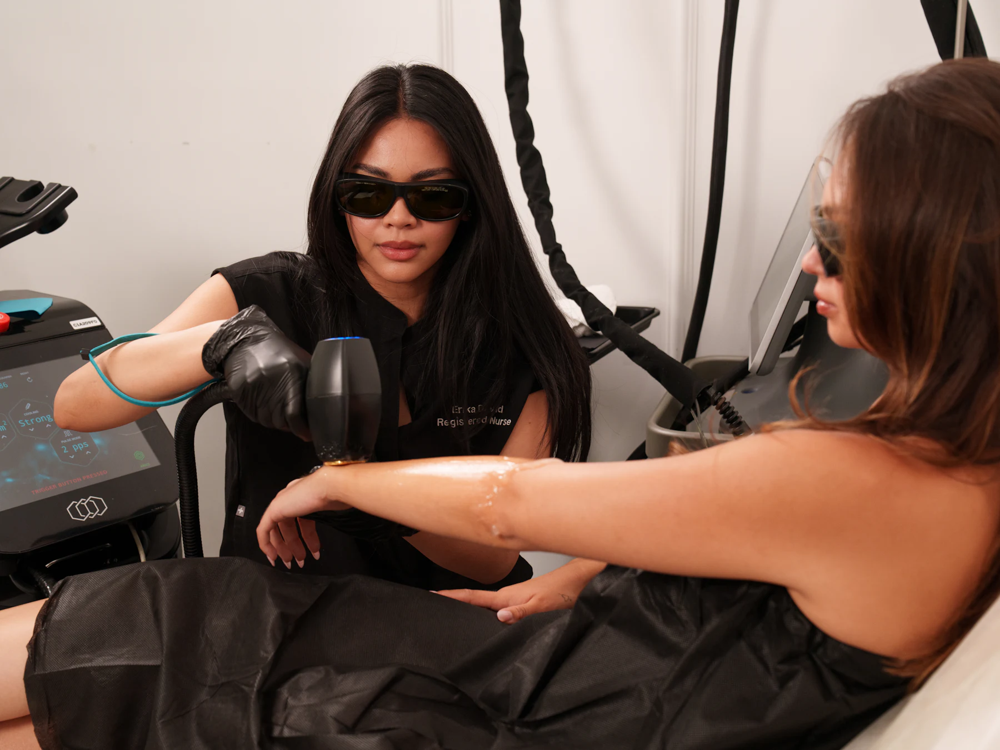

Für Laser- & Kosmetikinstitute
Viele Behandlungen.Für jede eine klare Seite.
Laser-Haarentfernung nach Zonen, Gesichtsbehandlungen, Microneedling und vieles mehr: Wer viel anbietet, braucht eine Website, die jede Behandlung einzeln erklärt und buchbar macht. Genau so wird man bei Google gefunden.

Die Ausgangslage
Ein grosses Angebot, das online klein wirkt.
Viele Institute führen alle Behandlungen auf einer einzigen Seite. Für Google ist das eine Seite für alles, und damit für keine Suche wirklich stark.
Ich baue für jede Behandlung eine eigene Seite: was sie bewirkt, wie sie abläuft, wie oft man kommt, was man danach beachtet. Mit Termin-Knopf direkt in Ihr Buchungssystem.
Beispiel: eine eigene Seite pro Behandlung in den Google-Ergebnissen
Ihr Angebot, sichtbar gemacht
Jede Behandlung bekommt ihr Bild.
Laser, Gesichtsbehandlungen, Kosmetik: Kundinnen buchen, was sie verstehen. Darum zeigt Ihre Website jede Behandlung mit Bild, Ablauf und Termin-Knopf.


So wird gesucht
Wonach Kundinnen suchen
Beispiele für Suchanfragen, wie sie Menschen in der Region Zürich eingeben. Für genau diese Momente entstehen Ihre Seiten.
Was ich für Sie tue
Alles, was es für mehr Termine braucht.
- Eine Seite pro Behandlung und ZoneDamit jede Suche eine passende Antwort findet.
- Zonen-ÜbersichtKundinnen sehen auf einen Blick, welche Zonen Sie behandeln.
- Online-BuchungFresha, Shore, OneDoc oder Ihr bestehendes System, sauber eingebunden.
- Ablauf und PflegehinweiseVorher, am Termin, nachher: weniger Fragen am Telefon.
- Google-Profil komplettAlle Behandlungen als Leistungen, Fotos und regelmässige Beiträge.
- Bewertungs-SystemMehr echte Stimmen nach jedem Termin.
- Saisonale InhalteZum Beispiel die Laser-Saison im Herbst und Winter, als Google-Beiträge.
- MonatsberichtAnfragen, Anrufe, Bewertungen und Positionen im Überblick.
Gut zu wissen
Texte, die zu Ihren Qualifikationen passen.
Die Verordnung zum Schutz vor Gefährdungen durch nichtionisierende Strahlung (V-NISSG) regelt, wer welche Laser- und IPL-Behandlung durchführen darf. Ihre Website soll genau das zeigen, was Ihr Team anbieten darf, und die Qualifikationen sichtbar machen.
Häufige Fragen
Was Institute mich fragen.
Unser Angebot ändert sich oft. Ist das ein Problem?
Funktioniert das mit unserem Buchungssystem?
Brauchen wir neue Fotos?
Gratis Sichtbarkeits-Check
Wie sichtbar ist Ihr Institut heute?
Ich prüfe Ihre Website, Ihr Google-Profil und Ihre Sichtbarkeit in ChatGPT und zeige Ihnen persönlich, wo neue Anfragen verloren gehen. Ob neue Website oder gezielte Verbesserungen: kostenlos und unverbindlich.

James Alves Da SilvaIch prüfe Ihre Praxis persönlich und melde mich direkt bei Ihnen.